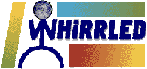

|

This is the Whirrled Home Page. The Whirrled pages are still under
construction, as is the Whirrled project
itself. But those who ignore the coming of Whirrled are doomed
to marginalization and obsolescence. The twenty-first century is
getting closer every day....
CONTENTS
Whirrled is about who we are, and about the world we live in. Who are we? 'We' are the
children of the digital age, Generation X, the kids of the Baby Boomers, whatever. We are linked
together by the startling power of the new communications revolution, and enmeshed in a web of
cultural conditions that are only imperfectly understood. Technology is an essential element of the
universe we move in, but technology alone does not define us. We are often confused, unsure about
what we want out of life, unwilling to acquiesce to the expectations and ideals of the previous
generation. Yet let there be no mistake: we will rule the world at the dawn of the 21st
century.
The Whirrled project is a multifaceted effort to examine our world from the inside. The
project will include not only traditional print materials, but also interactive online sources of
information and discussion.

Whirrled is a creation of Werbach Propaganda.
We're working hard to make Whirrled a reality. More material will be added to this site soon....

Check out some sample draft pages for our forthcoming book, Whirrled: A Survival Guide for the 21st Century.
Discover the ten principles for the 21st century, before it's too late.
Read more words of Whirrled, hot off the cathode ray tube.
If you crave more information on the Whirrled project, send
EMail to whirrled@werbach.com.

This page and all pages of Whirrled material on this site are
copyright © 1995, 1996 by Kevin and Adam Werbach.
Last updated August 23, 1996.
|